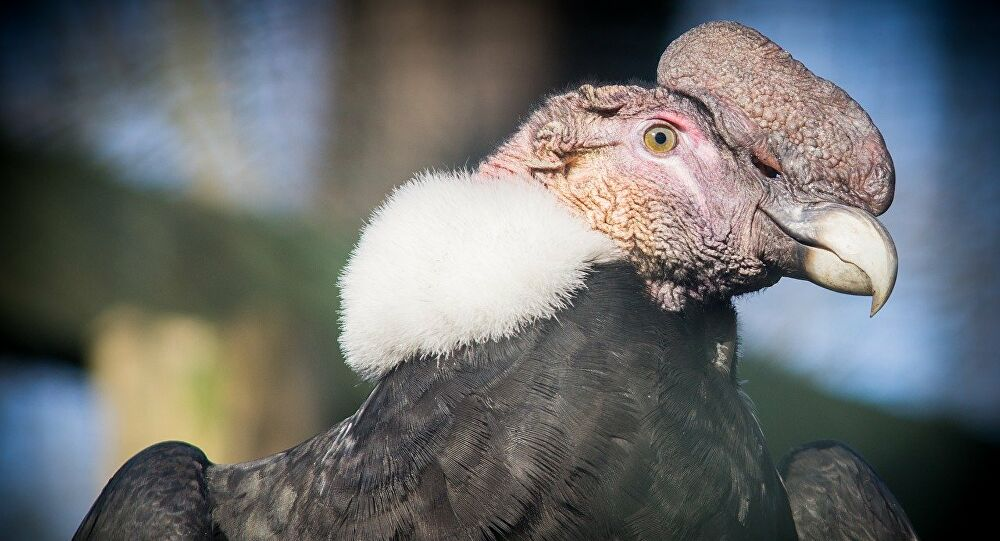

El Cóndor Andino (Vultur gryphus) también conocido como el Cóndor de los Andes o simplemente Cóndor es el ave volador viva más grande del planeta, llegando a medir 1,42 m de alto,
3,30 m de envergadura y el macho puede llegar a pesar hasta 15 kg y la hembra hasta 11 kg.
El cóndor es una gran ave de color negro con un plumaje blanco alrededor de su cuello y en la punta de sus alas, su cabeza carece de plumas y es de un tono rojizo,
la cual cambia de color dependiendo del estado emocional del ave, el macho cuenta con una cresta.
Su pico es bordeado con terminación en gancho y cortante, con grandes alas y patas no prensiles, es decir que no sirven para agarrar su presa debido a que poseen uñas cortas y no son curvas,
pero le permiten sujetar la carroña.
Su plumaje es de color café mientras alcanzan la madures, este empezara a mudar a negro. Los ojos de los machos son de color café y los ojos de las hembras son de color rojizo.
Es una de las aves más longevas del mundo, viviente hasta 75 años. Su plumaje es denso, lo que lo mantiene abrigado en climas gélidos.
El polluelo intenta volar a los 6 meses de haber nacido, y a los 9 meses ya está listo para acompañar a sus padres, aprendiendo a sobrevivir.
Pasado 2 años está listo para mostrar su lugar sobre la carroña.